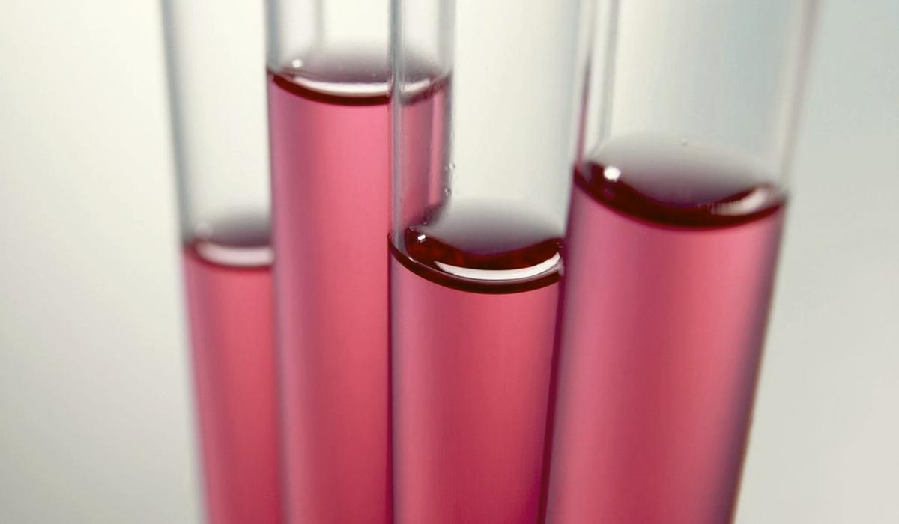
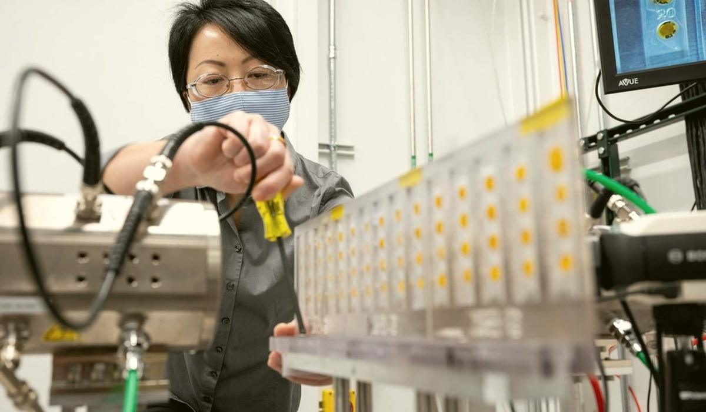

Where does your plant get dirty first? Your micro plates already know
Micro results arrive days after the beer has moved on, so a single plate rarely changes a decision. Trended by sample point, they show where contamination starts and which clean is not holding.

The plate always arrives late
Brewery micro is slow by nature. Anaerobic plates for beer spoilers incubate for days. A forcing sample sits at 25 to 30 °C for four to six weeks. By the time a positive shows, the batch it came from may already be in trade. That is why individual results rarely stop anything.
The value is in the pattern. Thirteen weeks of plates from the same points tell you far more than this morning's plate ever will. A plant does not get dirty everywhere at once. One point goes first, usually the same one. The others follow over days or weeks. If you can see which point leads, you can clean it before the rest catch up.
What to collect
Each result needs four things attached: the sample point, the time, the result and the last clean of that point. Most labs record the first three. The fourth sits in the CIP system and rarely gets joined.
- Sample points from wort cooler outlet through fermenters, bright beer tanks, filler bowl and post fill pack.
- Rinse water, process gas and crowns, because anything that touches beer is a sample point.
- Swab and bioluminescence results after cleaning, which come back in minutes.
- CIP records for each circuit: time, temperature, concentration and flow.
The measure
Positive rate % = positive samples at the point / samples tested at the point x 100Calculate per point per week. Also split it by days since that point's last clean.
Say a hypothetical brewery tests five points weekly over a quarter, 13 weeks, so 13 samples per point. Results for beer spoilers:
| Sample point | Positives of 13 | Positive rate |
|---|---|---|
| Bright beer tank outlet | 1 | 7.7 % |
| Filler feed line | 2 | 15.4 % |
| Filler bowl | 5 | 38.5 % |
| Post fill, before pasteuriser | 3 | 23.1 % |
| Rinser water | 1 | 7.7 % |
The filler bowl leads. Now sort the same positives by days since the filler's last full clean. If four of the five bowl positives fell on day five or later of a seven day cycle, the clean itself works. It just does not last a week. The fix might be a mid week clean, not a new chemical.
Timing adds the second clue. If bowl positives appear first and post fill positives follow a few days later, the bowl is feeding the pack. If post fill positives appear on days the bowl is clean, look at crowns, rinser water or the process gas filter instead. Gas in contact with beer should pass a sterile filter of about 0.25 µm at the point of use. A tired filter cartridge is an easy thing to miss.
Traps that hide the leading point
- Sampling only after a clean. Results always look good straight after CIP. Spread samples across the cycle or you will never see the decay.
- Pooling points. One positive at a combined filler sample tells you nothing about which head or valve is harbouring the bug.
- Ignoring dead legs. A branch longer than about 1.5 pipe diameters, or CIP flow below about 2 m/s, will not clean properly and will keep reseeding the line.
- Treating a negative as clean. A plate can only grow what the medium and conditions allow. Slow spoilers need the right medium and the full incubation.
- Changing the method mid quarter. A new medium or incubation time changes the positive rate without the plant changing.
What good looks like
A weekly view of positive rate by point, with days since clean on the same chart. The quality and packaging leads agree which point leads and what the cleaning interval for it should be. Plating effort moves towards the points that matter, rather than being spread evenly by habit.
Beer365 joins LIMS micro results to CIP records and the batches each point touched, from your existing systems. It shows which point leads and how long each clean holds, with every claim tied to the results and batches behind it.
This article answers one of the quality, safety and traceability questions Beer365 is built for.

Written by Ankur Napa
R&D brewer at United Breweries, SABMiller and AB InBev, then a data scientist on AI and generative AI for AB InBev's global business units. MSc Brewing Science and Technology, MSc Data Science and AI, Microsoft Certified Fabric Analytics Engineer. He leads Beer365 at Disruptive Advantage.
Keep reading
More on quality, safety and traceability

Quality, safety and traceabilityAllergen declarations start in the recipe, not the artwork
Every allergen line on a beer label is a claim about the recipe, the processing aids and sometimes the yeast. If those three are not joined to the artwork, the label is a guess that happens to be right.
Quality, safety and traceabilityTurning a consumer's 'it tastes funny' into a compound you can test for
Consumers do not write in diacetyl or trans-2-nonenal. They write butter, cardboard and skunk. An off flavour library translates their words into a short list of compounds, causes and lab tests.
Quality, safety and traceabilityWhere your plant fails a GMP walk while the total says it passes
A GMP assessment is a long list of yes or no questions. Scored properly by section and tracked over time, it shows which part of the plant keeps failing and which fixes never stuck.
Bring one week of brew sheets
We will show you where the beer went, on a call, before anyone signs anything.